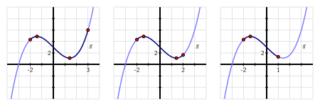

What are the differences between finding relative extreme values and global extreme values of a function?
How is the process of finding the global maximum or minimum of a function over the function’s entire domain different from determining the global maximum or minimum on a restricted domain?
For a function that is guaranteed to have both a global maximum and global minimum on a closed, bounded interval, what are the possible points at which these extreme values occur?
We have seen that we can use the first derivative of a function to determine where the function is increasing or decreasing, and the second derivative to know where the function is concave up or concave down. This information helps us determine the overall shape and behavior of the graph, as well as whether the function has relative extrema.
Remember the difference between a relative maximum and a global maximum: there is a relative maximum of \(f\) at \(x = p\) if \(f(p) \ge f(x)\) for all \(x\)near\(p\text{,}\) while there is a global maximum at \(p\) if \(f(p) \ge f(x)\) for all\(x\) in the domain of \(f\text{.}\)
For instance, in Figure 3.5.1, we see a function \(f\) that has a global maximum at \(x = c\) and a relative maximum at \(x = a\text{,}\) since \(f(c)\) is greater than \(f(x)\) for every value of \(x\text{,}\) while \(f(a)\) is only greater than the value of \(f(x)\) for \(x\) near \(a\text{.}\) Since the function appears to decrease without bound, \(f\) has no global minimum, though clearly \(f\) has a relative minimum at \(x = b\text{.}\)
Figure3.5.1.A function \(f\) with a global maximum, but no global minimum.
Our emphasis in this section is on finding the global extreme values of a function (if they exist), either over its entire domain or on some restricted portion.
Warm-Up3.5.1.
Let \(f(x) = 2 + \frac{3}{1+(x+1)^2}\text{.}\)
Determine all of the critical numbers of \(f\text{.}\)
Construct a first derivative sign chart for \(f\) and thus determine all intervals on which \(f\) is increasing or decreasing. Classify all critical numbers from part (a) as relative maxima, relative minima, or neither.
Do you think \(f\) has a global maximum? If so, why, and what is its value and where is the maximum attained? If not, explain why.
Subsection3.5.1Global Optimization
In Figure 3.5.1 and Warm-Up 3.5.1, we were interested in finding the global maximum for \(f\) on its entire domain. This example highlights a fact that will be useful for identifying global extrema on open intervals (for example, \((-\infty,\infty)\)):
Fact3.5.2.Single Critical Point.
If \(f\) is a continuous function on an interval \(I\) which contains a single critical number \(x=c\) in \(I\text{,}\) then
if \(f\) has a local maximum at \(c\text{,}\)\(f\) also has a global maximum at \(c\text{,}\) and
if \(f\) has a local minimum at \(c\text{,}\)\(f\) also has a global minimum at \(c\text{.}\)
In other contexts, however, we will focus on some restriction of the domain. When the restricted domain is closed (i.e., includes its endpoints), there is a mechanical process for determining the extreme values.
For example, rather than considering \(f(x) = 2 + \frac{3}{1+(x+1)^2}\) for every value of \(x\text{,}\) perhaps instead we are only interested in those \(x\) for which \(0 \le x \le 4\text{,}\) and we would like to know which values of \(x\) in the interval \([0,4]\) produce the largest possible and smallest possible values of \(f\text{.}\) We are accustomed to critical numbers playing a key role in determining the location of extreme values of a function; now, by restricting the domain to an interval, it makes sense that the endpoints of the interval will also be important to consider, as we see in the following activity. When limiting ourselves to a particular interval, we will often refer to the absolute maximum or minimum value, rather than the global maximum or minimum.
Activity3.5.2.
Let \(g(x) = \frac{1}{3}x^3 - 2x + 2\text{.}\)
Find all critical numbers of \(g\) that lie in the interval \(-2 \le x \le 3\text{.}\)
Use a graphing utility to construct the graph of \(g\) on the interval \(-2 \le x \le 3\text{.}\)
From the graph, determine the \(x\)-values at which the absolute minimum and absolute maximum of \(g\) occur on the interval \([-2,3]\text{.}\)
How do your answers change if we instead consider the interval \(-2 \le x \le 2\text{?}\)
What if we instead consider the interval \(-2 \le x \le 1\text{?}\)
In Activity 3.5.2, we saw how the absolute maximum and absolute minimum of a function on a closed, bounded interval \([a,b]\text{,}\) depend not only on the critical numbers of the function, but also on the values of \(a\) and \(b\text{.}\) These observations demonstrate several important facts that hold more generally. First, we state an important result called the Extreme Value Theorem.
The Extreme Value Theorem.
If \(f\) is a continuous function on a closed interval \([a,b]\text{,}\) then \(f\) attains both an absolute minimum and absolute maximum on \([a,b]\text{.}\) That is, for some value \(x_m\) such that \(a \le x_m \le b\text{,}\) it follows that \(f(x_m) \le f(x)\) for all \(x\) in \([a,b]\text{.}\) Similarly, there is a value \(x_M\) in \([a,b]\) such that \(f(x_M) \ge f(x)\) for all \(x\) in \([a,b]\text{.}\) Letting \(m = f(x_m)\) and \(M = f(x_M)\text{,}\) it follows that \(m \le f(x) \le M\) for all \(x\) in \([a,b]\text{.}\)
The Extreme Value Theorem tells us that on any closed interval \([a,b]\text{,}\) a continuous function has to achieve both an absolute minimum and an absolute maximum. The theorem does not tell us where these extreme values occur, but rather only that they must exist. As we saw in Activity 3.5.2, the only possible locations for absolute extremes are at the endpoints of the interval or at a critical number.
Note3.5.3.
Thus, we have the following approach to finding the absolute maximum and minimum of a continuous function \(f\) on the interval \([a,b]\text{:}\)
find all critical numbers of \(f\) that lie in the interval;
evaluate the function \(f\) at each critical number in the interval and at each endpoint of the interval;
from among those function values, the smallest is the absolute minimum of \(f\) on the interval, while the largest is the absolute maximum.
Activity3.5.3.
Find the exact absolute maximum and minimum of each function on the stated interval.
The interval we choose has nearly the same influence on extreme values as the function under consideration. Consider, for instance, the function pictured in Figure 3.5.4.

Figure3.5.4.A function \(g\) considered on three different intervals.
In sequence, from left to right, the interval under consideration is changed from \([-2,3]\) to \([-2,2]\) to \([-2,1]\text{.}\)
On the interval \([-2,3]\text{,}\) there are two critical numbers, with the absolute minimum at one critical number and the absolute maximum at the right endpoint.
On the interval \([-2,2]\text{,}\) both critical numbers are in the interval, with the absolute minimum and maximum at the two critical numbers.
On the interval \([-2,1]\text{,}\) just one critical number lies in the interval, with the absolute maximum at one critical number and the absolute minimum at one endpoint.
Remember to consider only the critical numbers that lie within the interval.
Subsection3.5.2Applications
We conclude this section with some applications of optimization, highlighting the methods discussed so far in determining global extrema.
Example3.5.5.
A 20 ft piece of wood is cut into two pieces. One piece will be used to form a square garden box and the other to form a triangular garden box which is an equilateral triangle. How should the wood be cut to maximize the total area enclosed by the square and triangle boxes? to minimize the area?
Solution.
We begin by sketching a picture that illustrates the situation. The variable in the problem is where we decide to cut the wood. We thus label the cut point at a distance \(x\) from one end of the wood, and note that the remaining portion of the wood then has length \(20-x\)
As shown in Figure 3.5.6, we see that the \(x\) ft of wood that is used to form the equilateral triangle with three sides of length \(\frac{x}{3}\text{.}\) For the remaining \(20-x\) ft of wood, the square that results will have each side of length \(\frac{20-x}{4}\text{.}\)
Figure3.5.6.A 20 ft piece of wood cut into two pieces, one of which forms an equilateral triangle, the other which yields a square.
At this point, we note that there are obvious restrictions on \(x\text{:}\) in particular, \(0 \le x \le 20\text{.}\) In the extreme cases, all of the wire is being used to make just one figure. For instance, if \(x = 0\text{,}\) then all 20 ft of wire are used to make a square that is \(5 \times 5\text{.}\)
Now, our overall goal is to find the minimum and maximum areas that can be enclosed. Because the height of an equilateral triangle is \(\sqrt{3}\) times half the length of the base, the area of the triangle is
When we set \(A'(x) = 0\text{,}\) we find that \(x = \frac{180}{4\sqrt{3}+9} \approx 11.3007\) is the only critical number of \(A\) in the interval \([0,20]\text{.}\)
Evaluating \(A\) at the critical number and endpoints, we see that
Thus, the absolute minimum occurs when \(x \approx 11.3007\) and results in the minimum area of approximately \(10.8741\) square feet. The absolute maximum occurs when we invest all of the wood in the square (and none in the triangle), resulting in 25 square feet of area. These results are confirmed by a plot of \(y = A(x)\) on the interval \([0,20]\text{,}\) as shown in Figure 3.5.7.
Figure3.5.7.A plot of the area function from Example 3.5.5.
Activity3.5.4.
A piece of cardboard that is \(10 \times 15\) (each measured in inches) is being made into a box without a top. To do so, squares are cut from each corner of the box and the remaining sides are folded up. If the box needs to be at least 1 inch deep and no more than 3 inches deep, what is the maximum possible volume of the box? what is the minimum volume? Justify your answers using calculus.
Draw a labeled diagram that shows the given information. What variable should we introduce to represent the choice we make in creating the box? Label the diagram appropriately with the variable, and write a sentence to state what the variable represents.
Determine a formula for the function \(V\) (that depends on the variable in (a)) that tells us the volume of the box.
What is the domain of the function \(V\text{?}\) That is, what values of \(x\) make sense for input? Are there additional restrictions provided in the problem?
Determine all critical numbers of the function \(V\text{.}\)
Evaluate \(V\) at each of the endpoints of the domain and at any critical numbers that lie in the domain.
What is the maximum possible volume of the box? the minimum?
Example 3.5.5 and Activity 3.5.4 illustrate standard steps that we undertake in almost every applied optimization problem: we draw a picture to demonstrate the situation, introduce one or more variables to represent quantities that are changing, find a function that models the quantity to be optimized, and then decide on an appropriate domain for that function. Once that is done, we are in the familiar situation of finding the absolute minimum and maximum of a function over a particular domain, so we apply the calculus ideas that we have been studying in this section.
We complete this section with a final optimization application relevant to foraging individuals in a system where food is obtained in discrete spaces which require time to travel between. One example is a bee traveling between flowers for nectar. If the bee’s goal is to maximize its average food collection rate per flower, it must decide whether to stay on the current flower, where its rate of food collection is decreasing as the nectar is depleted, or travel to another flower with more nectar, but lose the time it takes to travel there.
To find the optimal amount of time the bee should stay on each flower, we must determine a model for the quantity we’d like to maximize, the bee’s average food collection rate per flower after \(t\) seconds, which we will call \(r(t)\text{.}\) This includes the non-zero travel time it takes to get to another flower, which we will call \(\tau\text{.}\) Assume \(f(t)\) is the amount of food collected after \(t\) seconds on a flower, and that \(f(t)\) is continuous and satisfies \(f''(t) \lt 0 \text{.}\) This last assumption means \(f\) is concave down, or that the bee’s food collection rate on the flower decreases as time goes on and nectar is depleted. We can then write \(r(t)\) as
\begin{equation*}
r(t) = \dfrac{\text{food collected after }t \text{ seconds on flower}}{\text{total time before next flower}} = \dfrac{f(t)}{t + \tau}\text{.}
\end{equation*}
The domain of \(r(t)\) is the interval \([0,\infty)\text{.}\) To find the maximum value of \(r\) on this domain we first search for critical numbers of \(r\) in \([0,\infty)\text{.}\) We compute the first derivative of \(r\) as
Note that the denominator is always positive, so \(r'(t)\) is not undefined in the domain \([0,\infty)\text{.}\) Thus, \(t_c\) is a critical number if \(r'(t_c)=0\text{,}\) which is true when \(f'(t_c)(t_c+\tau) - f(t_c) =0\text{.}\) This is equivalent to \(f'(t_c)(t_c+\tau) = f(t_c)\text{,}\) which is equivalent to
In words, this says that if a time \(t_c\) is a critical number, then the instantaneous rate of change of the bee’s food collection on the flower at time \(t_c\) is the same as the bee’s average collection rate over the \((t_c + \tau)\) seconds it takes to be on the next flower. To verify that a maximum value occurs at a critical number \(t_c\text{,}\) the assumption that \(f''(t) \lt 0\) is important. It is a good exercise in computing derivatives to verify that if we compute \(r''(t)\text{,}\) evaluate \(r''(t_c)\) and then simplify, we get
Since \(t_c + \tau \gt 0\) and under the assumption that \(f''(t_c) \lt 0\text{,}\) this means that \(r''(t_c) \lt 0\text{.}\) Hence, by the second derivative test, a local maximum of \(r(t)\) occurs at the critical number \(t_c\text{.}\) Further, every critical number \(t_c\) in the domain \([0,\infty)\) satisfies this property, and so every critical number in \([0,\infty)\) is a local maximum. Since \(r(t)\) is a continuous function on the domain \([0,\infty)\text{,}\) there can only be one such critical point. By Fact 3.5.2, a global maximum of \(r(t)\) also occurs at the critical number \(t_c\text{.}\)
This general result is known as the Marginal Value Theorem, and is summarized below:
Fact3.5.8.Marginal Value Theorem.
We have a system of foraging individuals in which there is a constant travel time \(\tau \gt 0 \) to get from one source to the next. Let \(f(t)\) represent the amount of intake of a resource after time \(t\) spent on a source. Assume \(f(t)\) is continuous and \(f''(t)\lt 0\text{.}\) Let \(r(t) = \dfrac{f(t)}{t+ \tau}\) be the average collection rate after spending time \(t\) on a single source. Then the time \(t_c\) an individual should spend on a single source in order to maximize its average collection rate \(r(t)\) satisfies
Intuitively, the Marginal Value Theorem says that a bee should leave a flower the instant before its instantaneous collection rate drops below the average collection rate; that is, the bee should leave when it can do better on a different flower.
Example3.5.9.Marginal Value Theorem.
Suppose the food collection function for a bee is \(f(t) = \dfrac{t}{0.5+t}\text{,}\) and the travel time between flowers is \(\tau=1\) second. Then the average collection rate after \(t\) seconds is given by
It is a good exercise to verify that the only positive critical number of \(r(t)\) is \(t_c = \sqrt{0.5}\text{,}\) and that \(f'( \sqrt{0.5}) = r( \sqrt{0.5})\text{.}\) The interactive below shows a visualization of the Marginal Value Theorem in this example: At times \(t\) when the bee is instantaneously doing better than average (\(0 \leq t \lt \sqrt{0.5}\)), the bee should stay on the flower. This is when the slope of the tangent line at \(t\) is steeper than the slope of the secant line over \(t+1\) seconds. At times \(t\) when the bee is instantaneously doing worse than average (\(t \gt \sqrt{0.5}\)), the bee would have done better to leaver earlier. This is when the slope of the tangent line at \(t\) is less steep than the slope of the secant line over \(t+1\) seconds. Type in “\(t=\sqrt{0.5}\)” into the interactive. This is when the bee’s instantaneous collection rate and average collection rate are equal, and is when the bee should leave.
How does the travel time \(\tau\) impact when the bee should leave a flower? Answer the questions below based on your intuition, then use the interactive to confirm or deny your answer.
If the travel time is larger than \(1\text{,}\) should the bee leave sooner or later than it does when the travel time is \(1\) second? Answer.
\(1\)
If the travel time is smaller than \(1\text{,}\) should the bee leave sooner or later than it does when the travel time is \(1\) second? Answer.
\(1\)
Subsection3.5.3Summary
Question3.5.10.
What are the differences between finding relative extreme values and global extreme values of a function?
Answer.
To find relative extreme values of a function, we use a first derivative sign chart and classify all of the function’s critical numbers. If instead we are interested in absolute extreme values, we first decide whether we are considering the entire domain of the function or a particular interval.
Question3.5.11.
How is the process of finding the global maximum or minimum of a function over the function’s entire domain different from determining the global maximum or minimum on a restricted domain?
Answer.
In the case of finding global extremes over the function’s entire domain, we will typically see models that contain a single critical number in the domain. In this case we use Fact 3.5.2 to help determine the global extrema we’re interested in. If we are working to find absolute extremes on a restricted interval, then we first identify all critical numbers of the function that lie in the interval.
Question3.5.12.
For a function that is guaranteed to have both a global maximum and global minimum on a closed, bounded interval, what are the possible points at which these extreme values occur?
Answer.
For a continuous function on a closed, bounded interval, the only possible points at which absolute extreme values occur are the critical numbers and the endpoints. Thus, we simply evaluate the function at each endpoint and each critical number in the interval, and compare the results to decide which is largest (the absolute maximum) and which is smallest (the absolute minimum).
Exercises3.5.4Exercises
1.
Let \(s(t)\) be the family of functions given by \(s(t)=At^pe^{-kt}\text{,}\) where \(A\text{,}\)\(p\text{,}\) and \(k\) are positive parameters. These functions are called surge functions, and can be used to model quantities that experience a “surge” before decaying slowly, such as the concentration of a medication after injection. An interactive is provided for you to verify the answers you compute below.
Determine when the global maximum of \(s(t)\) occurs on the domain \((0,\infty)\text{.}\) Be sure to justify how you know it is a global maximum that occurs.
Does the parameter \(A\) effect where the global maximum of \(s(t)\) occurs? Explain how you know.
Does the parameter \(A\) effect the value of the global maximum of \(s(t)\text{?}\) Explain how you know.
2.
Let \(f(t) = 6t+ \dfrac{24}{t}\text{.}\) Find the exact absolute maximum and minimum of \(f\) on the provided intervals by testing the endpoints and finding and evaluating all relevant critical numbers of \(f\text{.}\)
\(\displaystyle [1,3]\)
\(\displaystyle [1,6]\)
\(\displaystyle [3,6]\)
3.
Sketch the graph of a function that satisfies each set of criteria below, if one exists. If such a graph does not exist, explain how you know.
Sketch a graph of \(f(x)\) whose domain is \([-2,3]\) such that \(f\) achieves an absolute maximum of \(y=3\) at \(x=0\) and \(x=2\text{,}\) and an absolute minimum of \(y=-5\) at \(x=3\text{.}\)
Sketch a graph of \(h(x)\) whose domain is \([0,10]\) such that \(h\) achieves an absolute maximum of \(y=0\) at \(x=5\) and does not have an absolute minimum value.
Sketch a graph of \(k(x)\) whose domain is \([0,10]\) such that \(k\) has a single critical number at \(x=5\text{,}\) and achieves its absolute maximum and minimum values at the endpoints.
Sketch a graph of \(j(x)\) whose domain is \((-\infty,\infty)\) such that \(j\) has a global maximum value and two critical points but does not have a global minimum value.